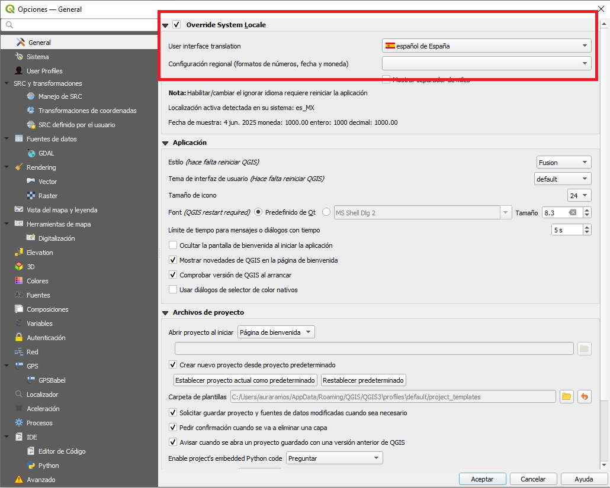
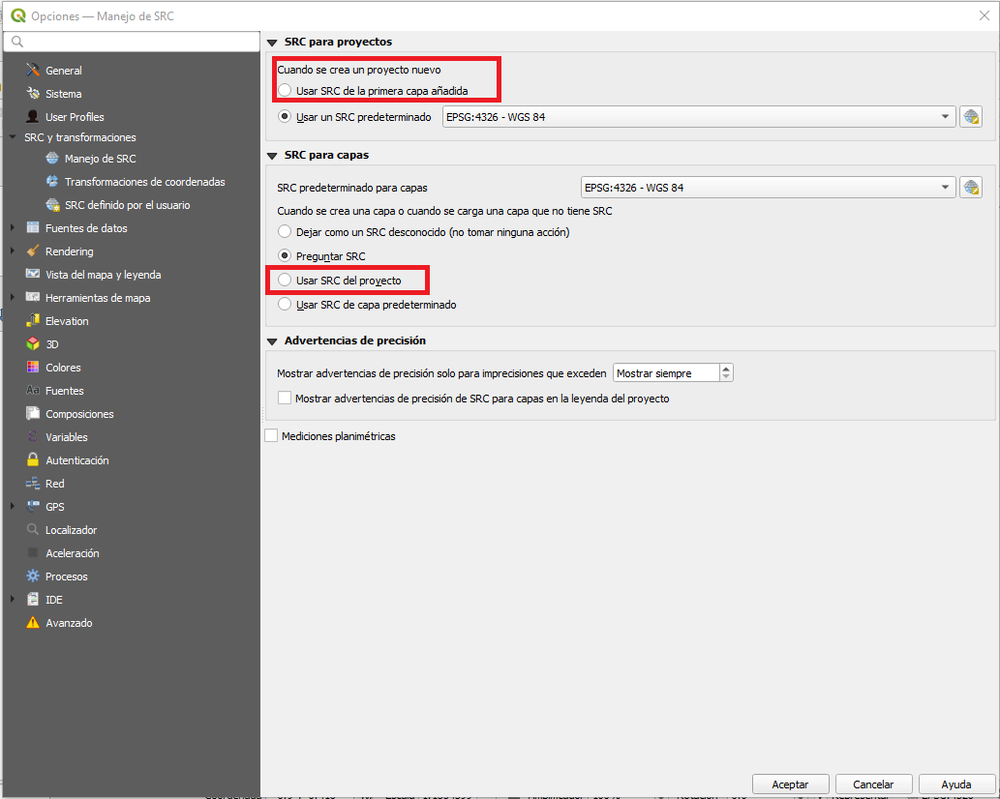
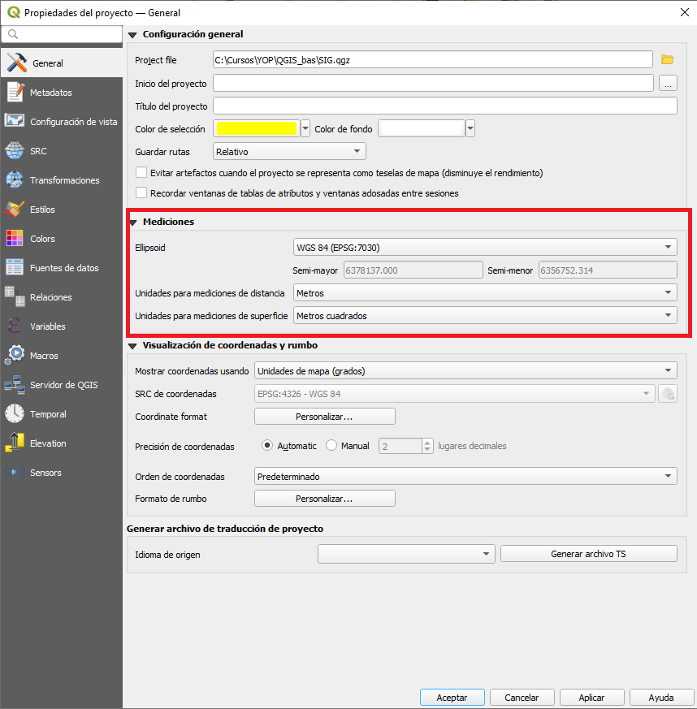

A continuación se presentan algunas configuraciones clave para ajustar tu entorno de trabajo en QGIS. Puedes consultar la documentación oficial en el siguiente enlace:
Si tu sistema está en español, QGIS se configurará automáticamente. En caso contrario, puedes cambiarlo desde:
Ahí podrás seleccionar el idioma y ajustar formatos de fechas, números y monedas.

Define la proyección que utilizará tu proyecto desde el inicio:

Configura las unidades que utilizará tu proyecto:
